View All Blogs
높이 46px / 원형 38px / 화살표 20px × 2. 호버하면 검정 배경으로 바뀌고 −45° 마스크 안에서 화살표가 30px 교차합니다. 이 Primary variant는 텍스트를 고정합니다.
클릭: 같은 탭에서 /blog로 이동. 데모에서는 이동 목적지만 표시합니다. 원본에 없는 눌림 축소 효과는 추가하지 않았습니다.
INDEPENDENT. EXPRESSIVE. PRECISE.
원본의 디테일을, 내 프로젝트의 언어로.
색상부터 인터랙션까지 직접 보고 적용하는 Opalhaus 디자인 시스템.
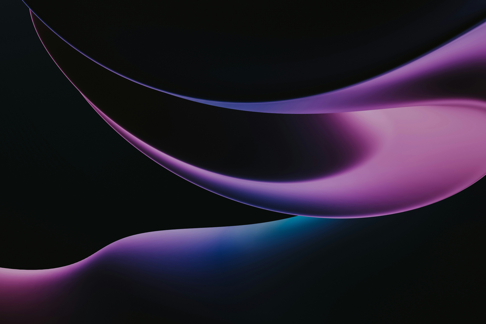
FORM / MOTION / IDENTITYO®공개 배포 소스 277.5 MB를 바탕으로 구성했습니다. 원본 추출값, 브라우저 실측, 프로젝트용 재구성 코드를 각각 구분합니다. Framer 편집 프로젝트는 포함되지 않습니다.
01 / COMPLETE SOURCE BROWSER
이미지 · 폰트 · 영상 · 코드 · 캡처를 검색하고, 실제 파일을 미리 본 뒤 내려받으세요.
REQUESTED / TYPE & SERVICE INTERACTIONS
글자 단위의 블러 등장, 서비스 제목의 묶음 등장, 이미지와 연결되는 서비스 목록, 이름·번호가 함께 넘어가는 히어로 링크를 원본 방식대로 나눴습니다.
REQUESTED / EXACT COMPONENT SOURCES
요청하신 View All Blogs 버튼과 프로모션 배너·가격 버튼. 원본 구조, 호버와 클릭 목적지를 각각 확인하고 소스를 가져가세요.
높이 46px / 원형 38px / 화살표 20px × 2. 호버하면 검정 배경으로 바뀌고 −45° 마스크 안에서 화살표가 30px 교차합니다. 이 Primary variant는 텍스트를 고정합니다.
클릭: 같은 탭에서 /blog로 이동. 데모에서는 이동 목적지만 표시합니다. 원본에 없는 눌림 축소 효과는 추가하지 않았습니다.
02 / INTERACTION LAB
등장, hover, ticker, 메뉴와 FAQ. 원본 설정과 조작 가능한 재구성을 함께 확인합니다.
03 / ORIGINAL FILMS
움직이는 배경을 CSS 애니메이션과 분리했습니다. 각 파일의 네이티브 컨트롤로 재생·탐색·전체 화면을 사용할 수 있습니다.
04 / REFERENCE SCENES
실제 사이트 화면을 함께 놓고 레이아웃, 대비, 정보의 밀도와 모바일 변화를 비교합니다.
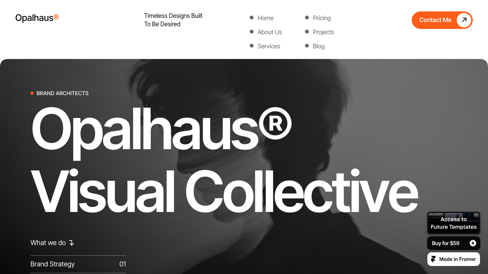
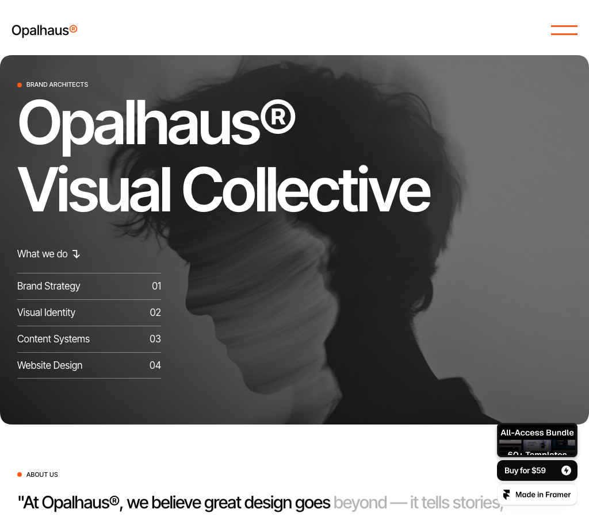
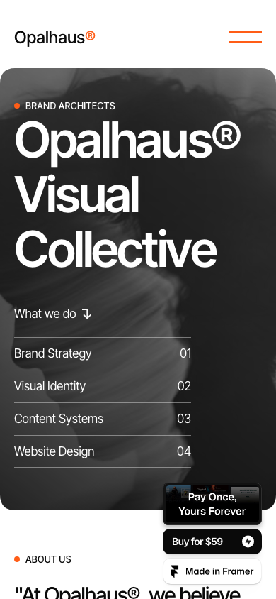
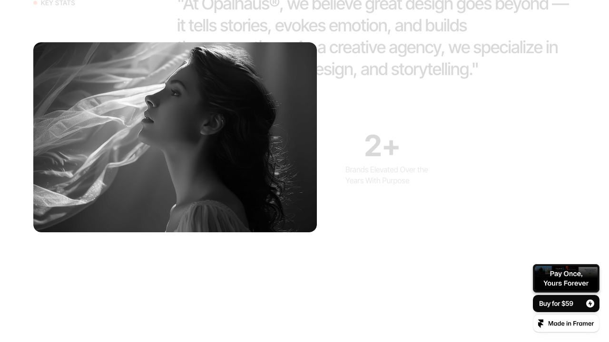
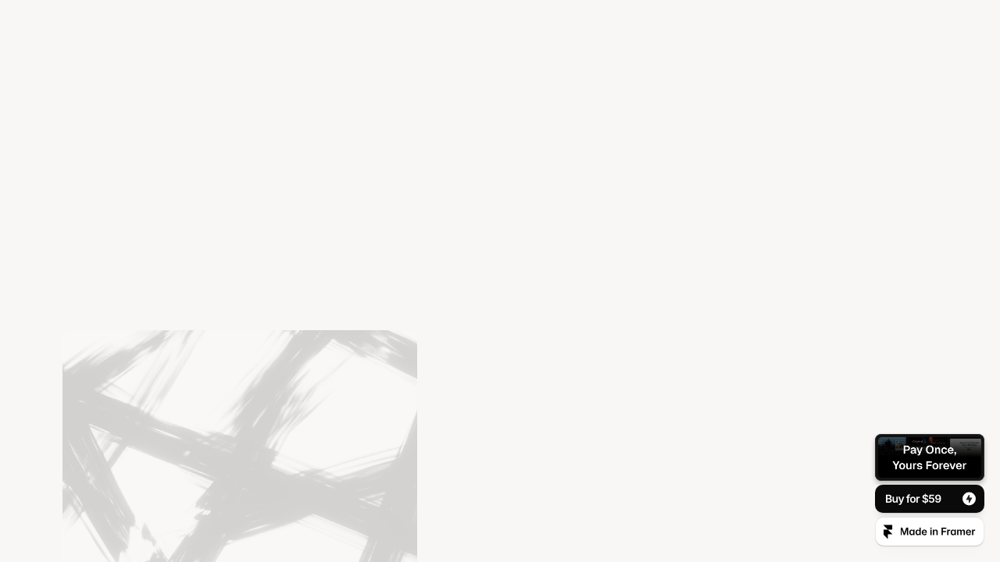
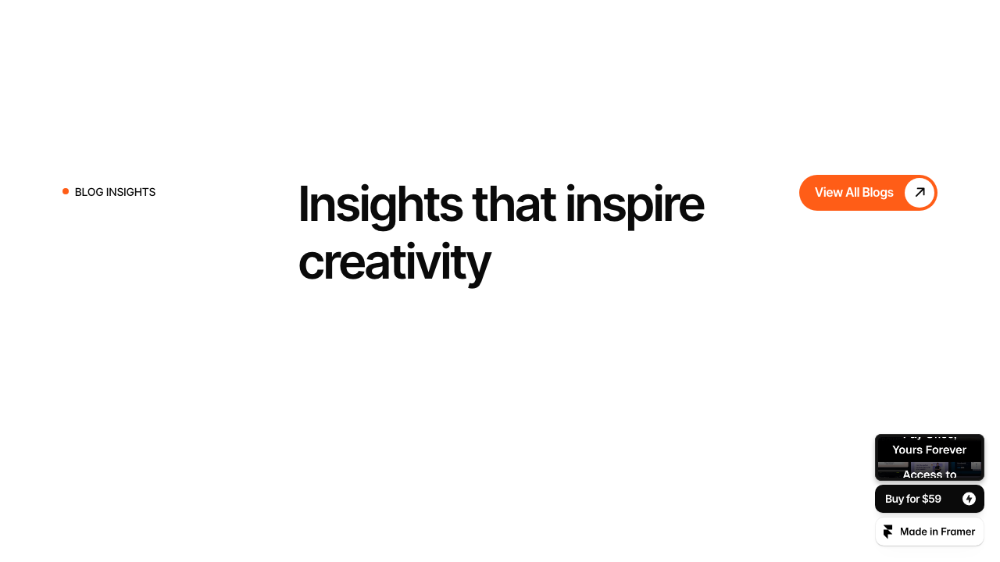
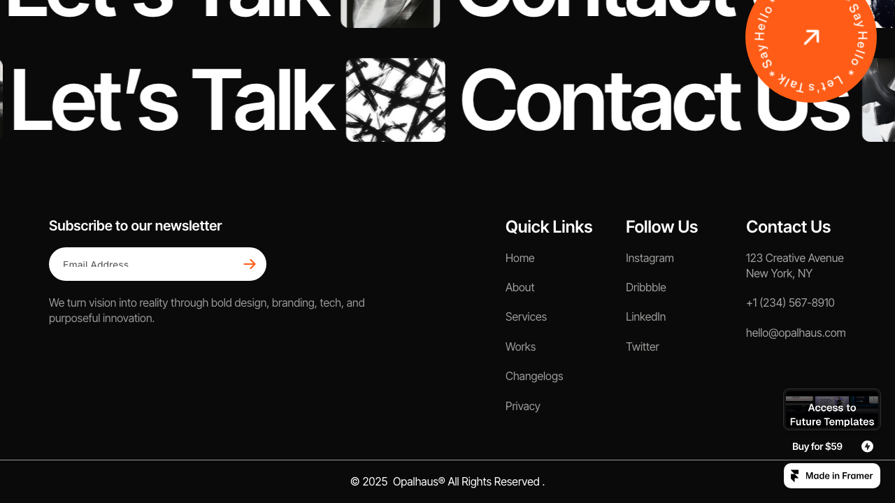
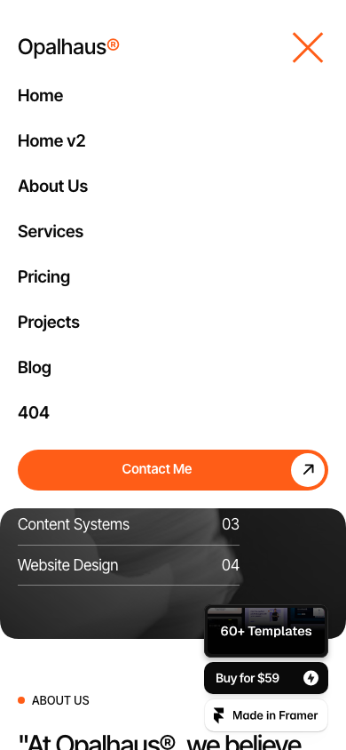
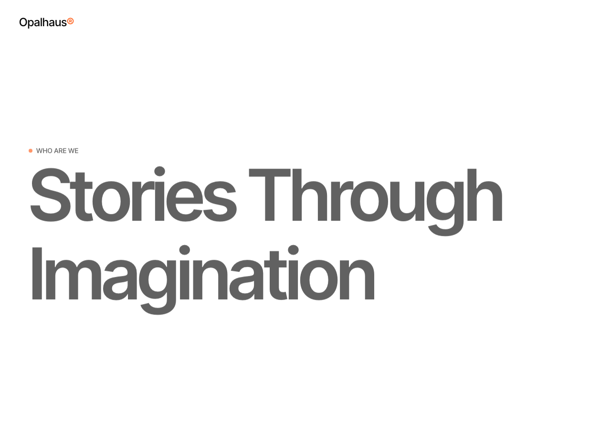
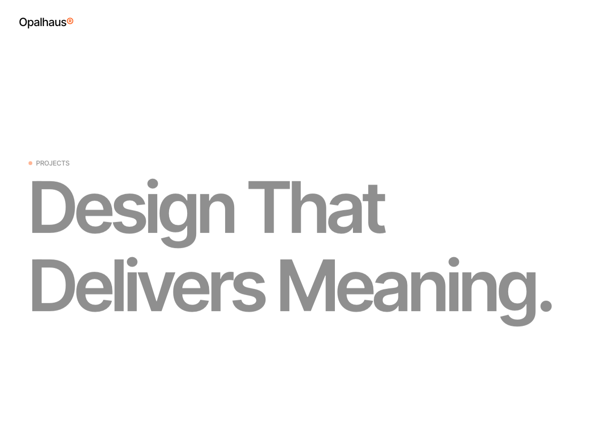
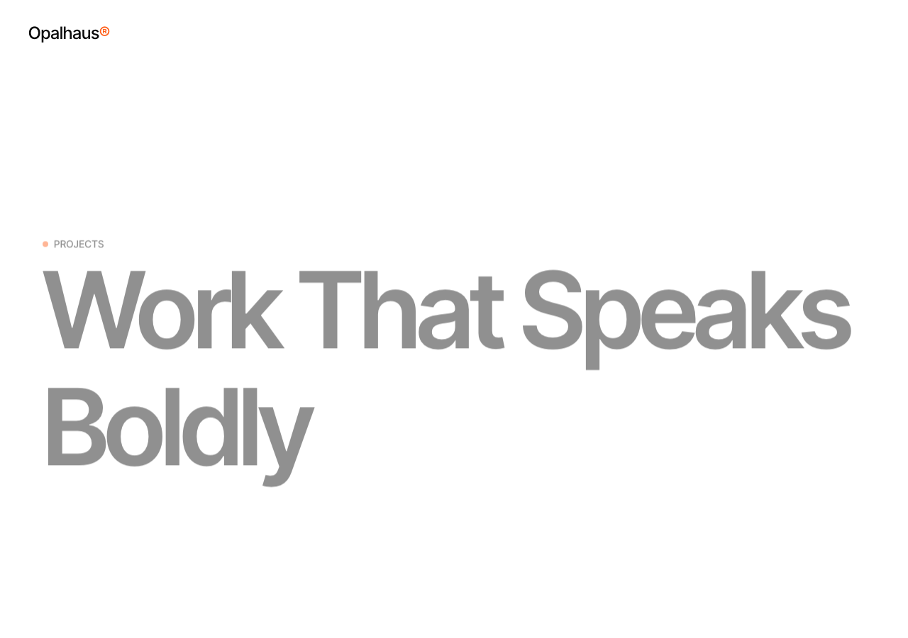
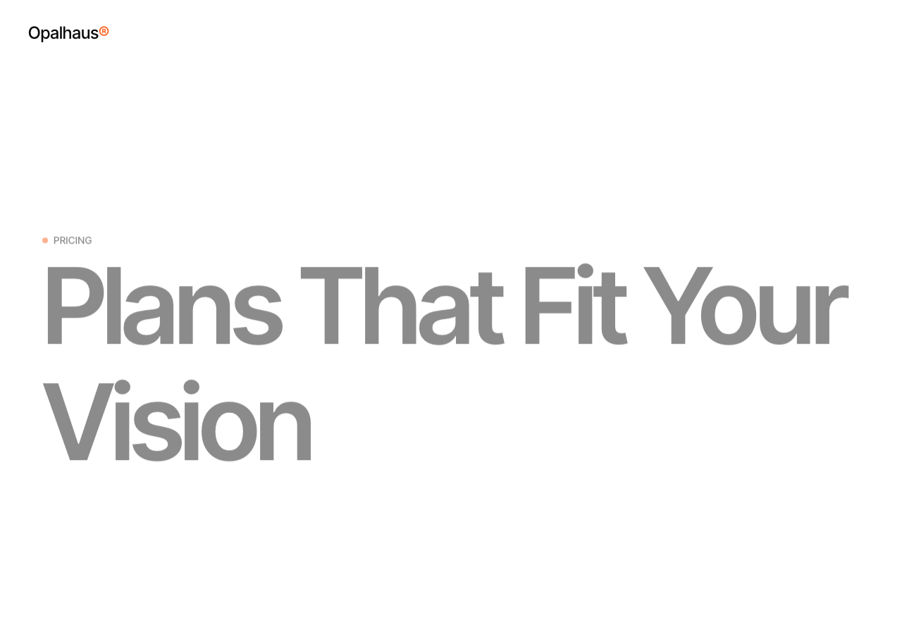
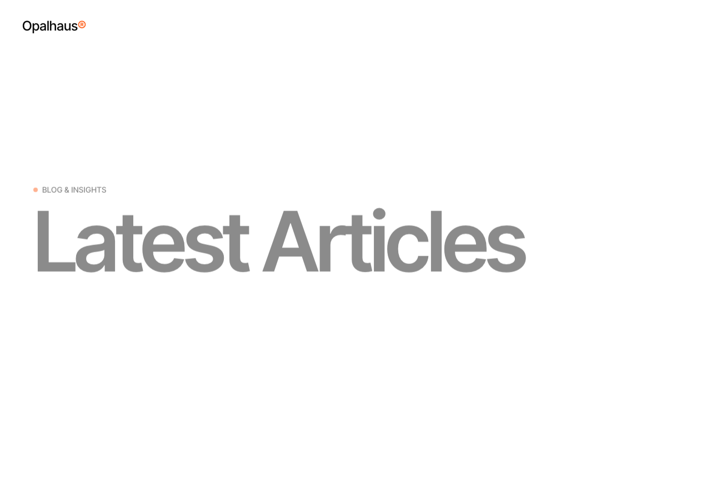
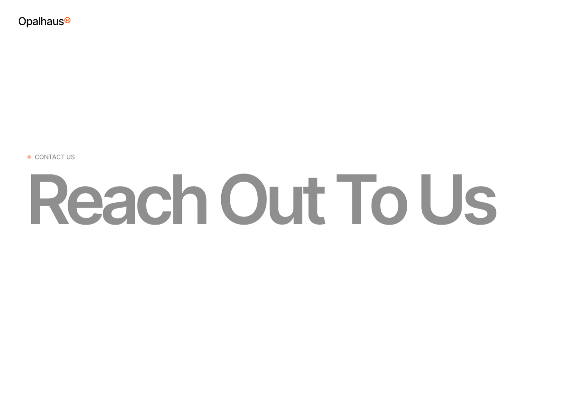
05 / COLOR SYSTEM
Framer 원본 토큰 8개. 클릭하면 CSS 색상 값을 복사합니다. 배경·문자 조합은 실제 적용 맥락에서 확인하세요.
06 / TYPOGRAPHY
로컬 폰트로 렌더링합니다. 타이틀의 압축된 자간과 가벼운 무게가 넓은 여백과 대비됩니다.
1.1 / −0.04em1.2 / −0.02em1.4 / normalKit label token첫 두 행은 1280 / 1024 / 390px에서 실측한 원본 값입니다. 본문·라벨은 적용 키트의 권장 스케일입니다. Inter Tight의 한글은 시스템 sans-serif로 대체됩니다.
font-family: 'Inter Tight', sans-serif;
font-size: 150px;
line-height: 1.1;
letter-spacing: -0.04em;07 / LAYOUT & SHAPE
원본 breakpoint를 유지하고, 재사용할 수 있는 여백·형태 스케일로 정리했습니다.
SPACING / KIT SCALE
004px008px012px016px024px032px048px064px096pxSHAPE / OBSERVED + KIT
0 / square12 / media24 / kit100 / pill12px 카드와 50 / 100px pill은 원본에서 관찰. 24px는 키트 조합용 값입니다.
08 / COMPONENT WORKBENCH
보기만 하는 표본이 아닌, 키보드·마우스로 조작하는 재구성입니다. 사용 코드는 각 표본 아래에 있습니다.
01 / BUTTONS & LINKS
Hover · focus-visible · active · disabled
<button class="ods-button"><span class="ods-button__label" data-label="Let’s talk">Let’s talk</span><span>↗</span></button>02 / SERVICE ROW
<a class="ods-service-row" href="/services"><span>01</span><h3>Brand strategy</h3><span>↗</span></a>03 / FAQ DISCLOSURE
design-system/styles.css를 연결하고 컴포넌트를 .ods 영역 안에 넣으세요. 동작이 필요한 경우 initOpalhaus()를 실행합니다.
상단의 모션 줄이기 버튼으로 이 카탈로그의 움직임을 중지합니다. 프로젝트 키트는 운영체제의 모션 감소 설정을 존중합니다.
<details class="ods-faq"><summary>Question <span>+</span></summary><p>Answer</p></details>04 / CONTACT FORM
05 / MEDIA CARD
 ↗
↗Brand identity · Art direction
06 / SECTION HEADER
작은 섹션 라벨, 큰 제목, 짧은 설명. 원본의 반복되는 정보 계층을 재사용하세요.
<header class="ods-section-header"><span class="ods-tag">Selected work</span><h2>Good design.<br>Great outcomes.</h2></header>09 / PROVENANCE
원본과 재구성의 경계를 유지합니다. 파일을 열어 추출값과 관찰 근거를 직접 확인할 수 있습니다.
↗Component specifications15개 컴포넌트 · 구조 · 상태 · 근거↗Authored CSS rules7,186개 규칙 · 원본 selector · 선언↗Original colorsFramer UUID → 색상 값↗Measured styles뷰포트별 실제 렌더링 스타일↗Font declarations로컬 파일에 연결된 @font-face↗Page animations등장 설정 / breakpoint variant↗Motion source index배포 JS 파일 + offset↗Full manifestURL · 경로 · 크기 · SHA-256↗10 / MAKE IT YOURS
재사용 CSS·JavaScript·토큰과 적용 예제를 패키지로 제공합니다.
{kind=link}
{kind=link}